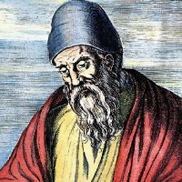

Daftar Isi
- Beranda
- Pythagoras
- Euclid
- Archimdes
- Leonardo Fibonacci
- Isaac Newton
- Leonhard Euler
- Carl Friedrich Gauss
- Georg Cantor
- Alan Turing
Hubungi Admin


JAM
lainnya
10 tokoh berpengaruh dalam matematika
Siapa itu Euclid?

Sejarah:
Euclid (skt. 300 SM) adalah seorang matematikawan Yunani kuno yang terkenal karena karyanya dalam geometri dan kontribusinya dalam menyusun "Elemen," sebuah karya monumental yang menjadi salah satu karya paling berpengaruh dalam sejarah matematika. Meskipun sedikit yang diketahui tentang kehidupan pribadinya, karya-karyanya telah memberikan pengaruh mendalam dalam perkembangan matematika.
Pemikiran:
Euclid adalah salah satu matematikawan pertama yang membangun dasar-dasar geometri secara aksiomatik. Aksioma adalah pernyataan dasar yang diterima sebagai benar tanpa pembuktian, dan Euclid menggunakan aksioma-aksioma ini sebagai landasan untuk membangun semua proposisi geometri dalam "Elemen." Pemikiran Euclid mengarah pada pengembangan deduksi formal dalam matematika, di mana kesimpulan logis diambil dari premis-premis yang diterima.
Karya:
Karya terbesar Euclid adalah "Elemen," yang terdiri dari 13 buku yang membahas berbagai aspek geometri, termasuk geometri datar, geometri tiga dimensi, teori bilangan, dan teori proporsi. Setiap buku dalam "Elemen" berfokus pada topik-topik tertentu, dan tiap buku mengembangkan proposisi-proposisi berdasarkan aksioma-aksioma dan definisi yang telah ditentukan sebelumnya.
Salah satu proposisi yang paling terkenal dalam "Elemen" adalah Teorema Pythagoras, yang membahas hubungan sisi-sisi dalam segitiga siku-siku. Euclid juga berkontribusi dalam mengembangkan konsep-konsep seperti teori sudut, teori irisan lingkaran, dan pembuktian melalui kontradiksi.
Karya "Elemen" tidak hanya mengandung matematika, tetapi juga prinsip-prinsip deduktif dan struktur logis yang mendalam. Karya ini menjadi salah satu referensi matematika paling penting dan digunakan sebagai sumber pembelajaran matematika di seluruh dunia selama berabad-abad.
Pengaruh Euclid terus berlanjut hingga saat ini, dan konsep-konsep geometri dan deduktif yang diperkenalkannya tetap menjadi dasar dalam pendidikan matematika. Meskipun tidak banyak yang diketahui tentang Euclid secara pribadi, karya-karyanya telah mengukir namanya dalam sejarah matematika sebagai salah satu pemimpin utama dalam pengembangan geometri dan deduksi formal.